它命中 conventional medicine 等显著片段，也混入 healthy recipe；这些结果与原 query 相近，但没有形成覆盖用户历史、记录与决策方法的互补结构。
组会报告 · 2026-11-08
Agent Memory 与经验学习
从 Agent 与 Harness 出发：理解三类记忆，分析查询、维护与学习机制
Agent / Harness→三类记忆→评价与机制→思维拓展
专题目录 · 当前页
二、Benchmark：什么是好的 Memory06 MemoryAgentBench07 什么是好的 Memory
三、Query：关联、快慢路径与主动检索08 Query · 关联与控制09 HippoRAG 210 RF-Mem · 完整 Top-1011 Figure 18 案例12 MemR³ · 主动检索
参考资料30 主要来源
01
从 Agent 开始：围绕目标持续行动
Agent 不只生成一次回答，还要结合观察、工具与反馈，推进一个有状态的任务。
贯穿示例
“整理 Memory 论文，保留原图，做成汇报；今天没完成，明天接着做。”
- 观察
- 读材料与现有稿件，识别当前缺口。
- 行动
- 选择材料，调用工具，修改报告。
- 检查
- 核对原图、引用和页面，决定继续或修订。
第二天继续：哪些已完成，哪些待确认，下一步做什么？
历史被保留、被找到并进入下一次决策，才能帮助任务继续。
02
Harness：让 Agent 能执行、能恢复、能检查
同一个任务，既需要模型作出判断，也需要运行环境管理工具、上下文与持久状态。
目标与当前任务
继续完成 Memory 汇报
模型选择行动，使用观察与反馈调整下一步。
Harness · 运行支持
- 工具执行
- 读取文件、取得原图、构建页面
- 上下文与记忆
- 装入当前材料，保存进度与来源，按需取回
- 恢复与检查
- 恢复中断任务，核对产物与任务要求
Agent 是执行任务的整体；Harness 是运行支持。Memory 是其中需要保存、调用和维护的信息与状态，也可以由模型内部机制承载。
03
从人类记忆获得启发，也区分实现机制
人类记忆涉及多种功能。Agent 同样面临保留、组织、调用与遗忘的问题，但实现方式并不等同。
原图
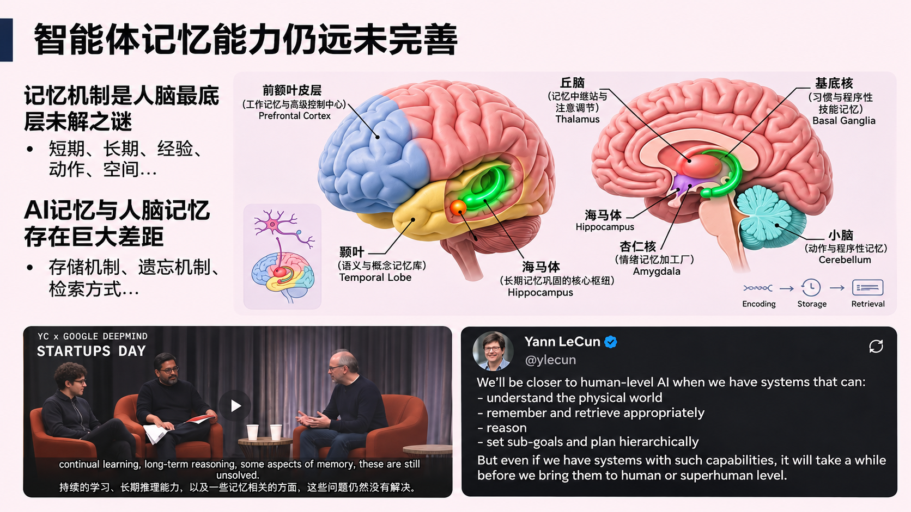
- 可以借鉴的问题
- 哪些信息影响当前决策？怎样建立线索？何时保留、更新或遗忘？
- 需要区分的实现
- Agent 可使用显式记录、模型参数或内部状态；不能把上下文、向量库与某个脑区一一对应。
04
记忆宫殿：组织信息，也组织回忆路径
把条目关联到熟悉的位置，再沿路线回忆。这给后面的关联检索留下一个直观问题：信息之间如何建立可用的联系？
六位置记忆宫殿 · 原图
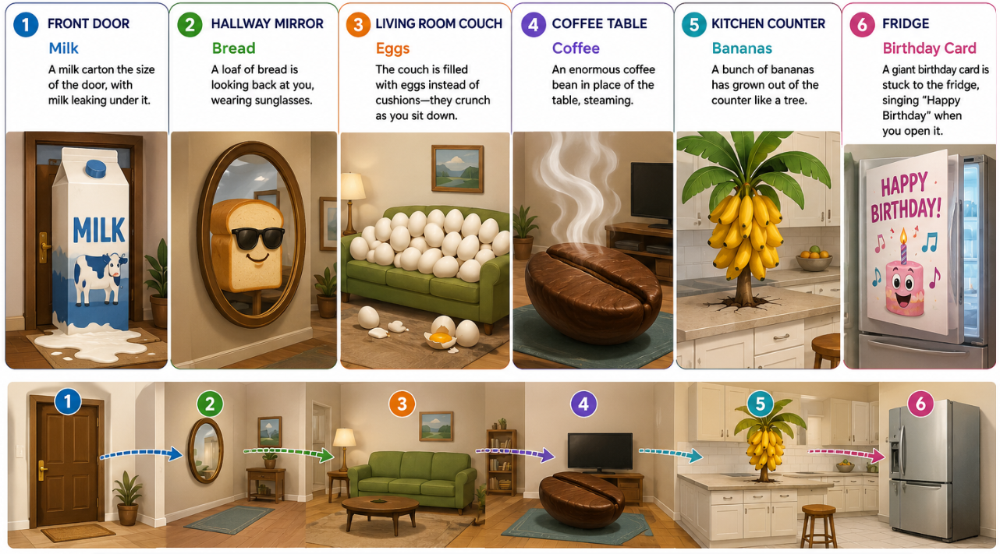
现场照片与另一幅四步示意（未核实为同一原图）
Figure 1 · 原图
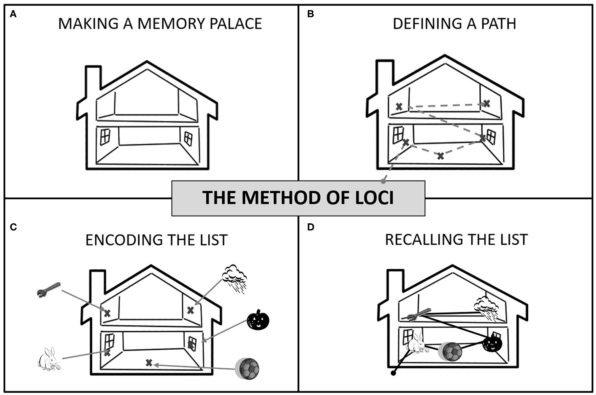
原图
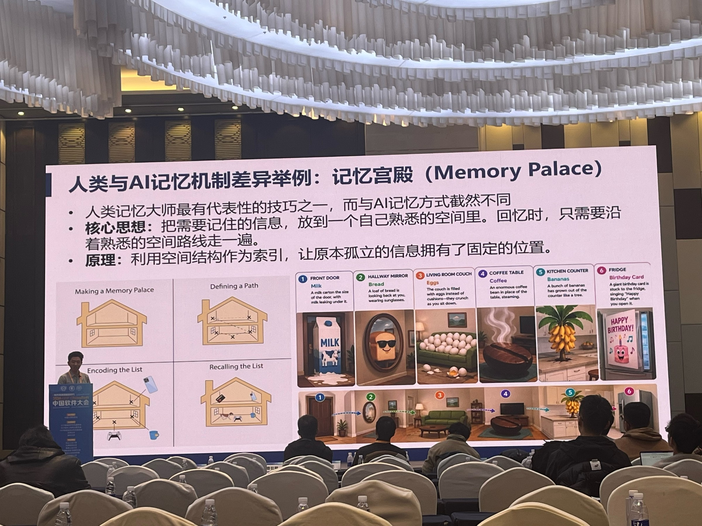
这里借鉴“组织与线索”的设计问题。后面的 HippoRAG 使用关联结构检索，但这不是二者机制等价的证明。
05
Agent 的三类记忆：当前使用、长期保留与经验复用
采用讲座中的三类作为讲解入口：先问记忆承担什么作用，再比较具体表示与管理机制。
Working Memory · 工作记忆
当前上下文、任务状态与中间推理状态，直接服务于正在进行的任务。
展开示例：Codex 压缩与任务续作
当前阅读的论文、正在编辑的段落和待解决问题构成任务中的工作信息。上下文压缩后，可用简短 Checkpoint 支持续作。
教学示例：RF-Mem 原图已核对，动画待检查；记录论文版本、图号与报告位置，下一轮据此继续。
截图只展示压缩提示，不据此推断 Codex 内部实现。Checkpoint 讲座来源
Long-term Memory · 长期记忆
跨时间保留的信息与记录，在后续任务中按需取回。
展开示例：ChatGPT 网页端的记忆管理
原图
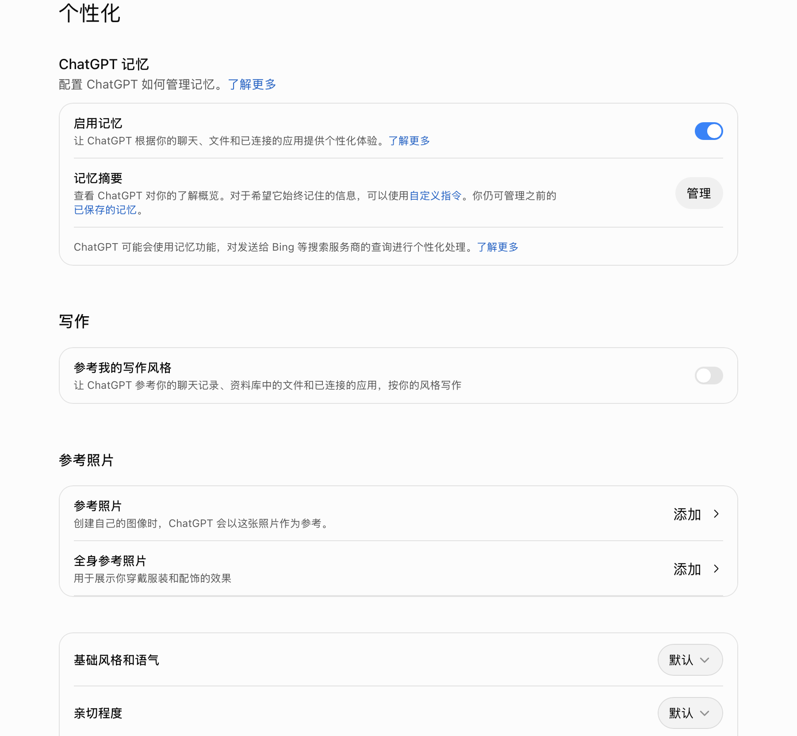
截图展示“启用记忆”“记忆摘要”和“管理”等入口，说明跨对话保留与管理信息的产品场景。
教学示例：下次准备报告时，取回此前保存的“保留英文 overview、采用蓝白风格”等要求。具体能否正确保留和调用，需要另行核验。
Skill / Experience Memory · 技能与经验记忆
从过去任务形成的可复用方法，用于指导新的行动。
展开示例：从一次出行安排中积累经验
过去的经历：助手查好了车票，才发现出发时间与用户的会议冲突，需要重新安排。
形成的经验：安排出行前，先确认日期、地点和不可出发的时段，再筛选车次。
再次使用：下一次安排另一次出行时，先核对这些条件，再开始查询。
“用户周四上午有组会”是事实记忆；“安排出行前先核对时间约束”是可复用的行动经验。
人工教学情境，用于解释经验如何指导后续行动。
二、Benchmark：什么是好的 Memory
06
MemoryAgentBench：增量交互中的四种能力
历史分批到达，随后在当前记忆状态上作答；评测完整 Agent 的外部表现。
清空状态 → 逐块输入历史 → 后续查询 → 按 gold answer 计分
Figure 1 · 原图
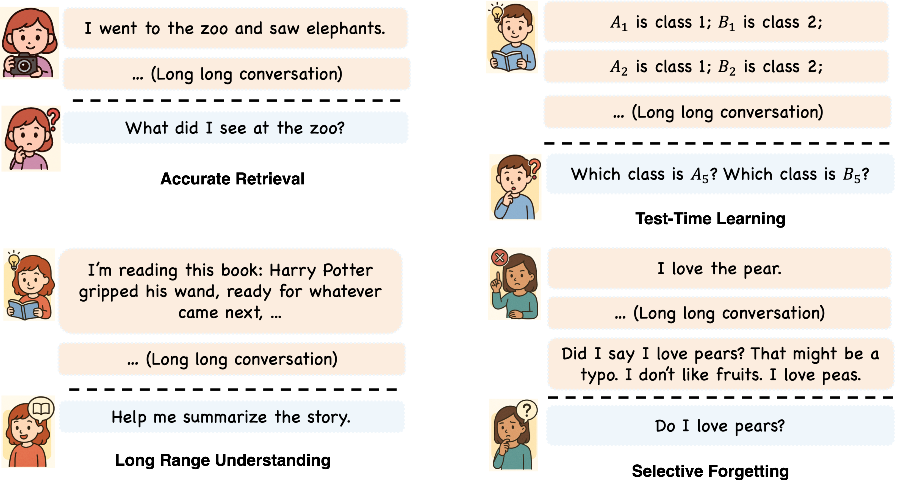
准确检索、测试时学习、长程理解、选择性遗忘互为补充；各任务使用对应指标，不只检查“是否存过这段历史”。
07
什么是好的 Memory：从 Benchmark 看能力与代价
先明确希望记忆做到什么，再看 Query 和增删改分别解决哪类失败。
| 能力 | 一个直观问题 | 后续机制 |
|---|---|---|
| 准确回忆 | 之前明确说过的事实，能否找对？ | Query 与证据选择 |
| 跨长历史整合 | 分散在不同时刻的信息，能否联系起来？ | 关联检索与迭代查询 |
| 测试时学习 | 新给出的规则，能否用于后续任务？ | 保留并使用新信息 |
| 冲突处理与选择性遗忘 | 用户已修改的信息，还会不会被旧记录覆盖？ | 更新、删除和保留策略 |
好的记忆不是保存最多，而是在可控成本下，让未来任务使用到正确、相关且仍有效的信息。
补充评价维度：写入／检索成本、延迟、过时信息影响，以及证据不足时的回答边界。这些是报告综合视角，不都属于 MemoryAgentBench 的四项官方得分。
2026 · ICLR · Evaluating Memory in LLM Agents via Incremental Multi-Turn Interactions
三、Query：关联、快慢路径与主动检索
08
Query：找什么、怎么找、什么时候继续找
检索不只是对向量库做一次 Top-k；还涉及信息之间的关联、预算和任务缺口。
- 关联
- HippoRAG 2：通过关系连接分散片段，最终取回原始证据。
- 深度
- RF-Mem：熟悉度决定快慢路径，慢路径逐轮展开查询。
- 控制
- MemR³：跟踪已有证据与缺口，选择继续检索、反思或回答。
09
HippoRAG 2：用“看熊猫”解释关联检索
小林想看的大熊猫，在哪座城市？按 Figure 2 的流程，把三段中文信息接成一条可检索的线索。
先看问题 · 原创中文教学例子
问题没提到的动物园，怎样成为检索线索？
我们要回答：小林想看的大熊猫，在哪座城市？
| 三段原文 | 提供的信息 |
|---|---|
| A 小林想看熊猫。 | 确定小林想看什么 |
| B 大熊猫住在竹园动物园。 | 确定熊猫在哪里 |
| C 竹园动物园位于青禾市。 | 确定动物园在哪座城市 |
关键是找到“竹园动物园”这个中间线索。问题里没有动物园名字，原文 C 也没有“小林想看熊猫”的表述；只按问题与段落的直接相似度检索，C 未必排得靠前。
接下来看动画：怎样从问题找到入口，经图上的关联取回原文 C，再结合证据回答？亮线用于讲解关联，不代表系统预先知道正确路线。
教学示意 · 人名与地名为虚构，无实测检索分数。机制依据 HippoRAG 2 Figure 2 与 §3。
中文教学例子：小林想看的大熊猫，在哪座城市？
图示可横向滑动
手动讲解← → 切步 · 空格播放
完整任务步骤文字
- 三段信息，单看一段都不够
A 记录小林想看熊猫，B 说明熊猫住在竹园动物园，C 说明动物园位于青禾市。花园和海边材料是干扰。
先看清任务需要哪些信息，再讨论怎样取回。
- 把句子拆成“谁—关系—什么”
抽取小林想看熊猫、熊猫住在动物园等关系。爱吃面条、周末有空、坐地铁也可以成为记录，但不都能回答城市问题。
抽出关系不等于已经判断它对当前查询有用。
- 把“熊猫”与“大熊猫”接起来
不同片段可能使用不同说法。同义边让查询里的“熊猫”连接到材料里的“大熊猫”。
同义边和“住在”这类事实关系边要区分。
- 原文与短语进入同一张图
A 连小林与熊猫，B 连熊猫与动物园，C 连动物园与青禾市。红色段落节点保留完整上下文，蓝色节点表达概念。
既能沿短语关联，也能回到完整原文。
- 一次查询，先找到两类候选
预设的初次片段候选混有花园与海边材料；三元组候选有五条。两路候选不是最终答案。
这里展示候选怎样被使用，不把预设顺序称为实测排名。
- 五条关系中，保留与看熊猫相关的两条
保留“小林想看熊猫”和“熊猫住在动物园”。面条、空闲时间、交通方式不能告诉我们熊猫所在的城市。
过滤的是本次候选，底层原文并没有被删除。
- 从相关短语和段落一起出发
小林、熊猫、竹园动物园构成相关短语起点；段落节点也参与种子初始化。这里只标角色，不给新例子贴上论文原例的分数。
两类种子进入同一张联合图。
- 从“想看什么”走到“住在哪里”
沿小林 → 熊猫 → 竹园动物园的关联找到地点线索。同义边补充“熊猫 / 大熊猫”的词面入口。
图检索支持连接分散信息。
- 找到动物园对应的地点原文
通过上下文边访问 C，读到“竹园动物园位于青禾市”。实际方法会按段落节点的 PageRank 得分排序。
说明图如何帮助找原文，不报告本例未测量的排序。
- 三段证据相互衔接，噪声仍要识别
A 确定小林的目标，B 给出熊猫所在动物园，C 给出城市。D 的郁金香不支持当前回答。
检索结果不保证每条都能用于作答。
- 答案：青禾市
把 A、B、C 连起来：小林想看熊猫，熊猫住在竹园动物园，动物园位于青禾市。
图负责帮我们找到线索，答案依然以原文为依据。
PPT 主线材料 · 页面所列原文核对 / 教学重构 · 来源
10
RF-Mem：逐轮选出完整 Top-10
结合英文 overview 与 Figure 18 的真实 ID，观察查询更新、分支保留和 4 → 6 → 9 → 10 条结果的形成。
查询：探索适合医疗决策的新循证实践。B=2 · F=2 · K=10
真实记忆 ID实线：保留方向虚线：未保留／未纳入N 为检索预算，不是新增条数
手动讲解← → 切步 · 空格播放
完整步骤与十条结果文字
- 同一查询，两种检索路径
用户希望探索适合医疗决策的新循证实践。先看一次检索，再沿 Figure 18 的四轮慢路径，逐条追踪最终选中的十条记忆。
两条路径使用同一记忆库；区别是是否继续更新查询并沿分支探索。
B=2 · F=2 · K=10 - Familiarity：一次取回十条
一次检索返回 ID 47、7、70、36、69、9、6、3、2、80。右侧完整列出十条，其中包含食谱和沟通等片段。此时没有后续分支探索。
这一页的十条来自原图上半部分；不要把它们与慢路径最终的十条混为一组。
S_fast = Top-10(sim(xₜ, zᵢ)) - 第一轮：四条记忆，形成两个局部簇
Cluster 1 包含 47、7，Cluster 2 包含 70、36。它们分别提供安全性、常规医学及互补治疗、疗效评估的线索。按本图保留分支的 ID 累计为 4 条。
只聚类这次检索的局部候选，尚未对整个记忆库做预先聚类。
N₀=(2+0)×2=4；Bag={47,7,70,36} - 用簇中心形成下一轮查询
把每个局部簇的中心与当前查询混合，再加回原始查询，形成两个继续探索的方向。图中 q₁、q₂ 是查询方向，不是新增记忆。
更新 Query 不会直接增加结果条数；此时仍是 4 / 10。
x_b⁽ʳ⁺¹⁾=norm(αx⁽ʳ⁾+(1−α)g_b⁽ʳ⁾+xₜ) - 第二轮：保留两条新记忆，累计六条
原图实色分支保留 69 和 9；虚线的 6 不继续扩展。9 也出现在另一个候选分支，但同一个 ID 只计一次，累计从 4 条增至 6 条。
B=2 限制保留的分支数；一条分支可以包含多条记忆。
N₁=6；新增 {69,9}；|Bag|=6 - 第三轮：新增三条，累计九条
沿 69 的方向，保留包含 4 的簇，以及包含 44、45 的簇；沿 9 出现的 3、6 为原图虚线分支。本轮新增 4、44、45 三个 ID。
保留两条分支可以带来三条新记忆，不能把 Top-B 误画成每轮只加 B 条。
N₂=8；新增 {4,44,45}；|Bag|=9 - 第四轮：41 进入，第十条补齐即停止
沿患者病史方向继续展开，41 提供结构化方法与循证实践线索。纳入 41 后达到 K=10；同簇的灰色 48 不进入这十条，虚线 ID 1 也不纳入。
十条来自跨轮累计；达到预算就停止，不是把末轮全部候选都加入。
新增 {41}；|Bag|=10=K → stop - 完整 Top-10，与 Figure 18 逐项对照
慢路径最终为 47、7、70、36、69、9、4、44、45、41。后四条提供患者病史、疗法偏好、循证进展及循证方法线索；右侧列表显示每条来自哪一轮。
列表按图中轮次组织，序号仅方便对照，并不声称是全局相似度排名。
4 → 6 → 9 → 10；unique IDs = 10
最终十条记忆
- ID 47 · 有效安全（r=0）：希望采用对求助者有效且安全的方法。
- ID 7 · 常规医学（r=0）：偏好常规医学，其他方式可能不符合自己的取向。
- ID 70 · 互补疗法（r=0）：关注不同治疗方式能否与常规治疗互补。
- ID 36 · 疗效评估（r=0）：探索不同治疗方式并评估其疗效。
- ID 69 · 科学融合（r=1）：关注现代科学与传统方法的结合及整体照护。
- ID 9 · 健康追踪（r=1）：想寻找跟踪个人健康历程的不同方法。
- ID 4 · 患者病史（r=2）：收集患者信息、回顾病史，以支持更有意义的讨论。
- ID 44 · 疗法偏好（r=2）：比较不同治疗方式与自己及患者需求的契合程度。
- ID 45 · 循证进展（r=2）：了解循证实践的新进展与专业人士的见解。
- ID 41 · 循证方法（r=3）：常规医学中的结构化方法和循证实践更符合自己的取向。
讲者提示
保留原报告的机制、数值与边界；结合该页来源讲解。
11
RF-Mem Figure 18：检索案例分析
上一页解释算法状态怎样变化；这一页回到论文原图，核对 Familiarity 的片段化结果与 Recollection 的多轮语义重构。案例参数为 B=2、F=2、K=10，展开到 r=3。
多轮 branch query 逐渐补出 patient history、health records、structured methodology 等分散在线程中的线索。收益来自语义覆盖扩展，而不是把初始 Top-10 简单重排。
Figure 18 是成功案例；Figure 19 同时展示慢路径漂移到长期财务管理而输给 Familiarity。Recollection 更深，不等于始终更准确。
Top-10 到底怎样形成？先按簇内相似度总和选择 Top-B branches，再把保留分支中的未见 memory 按 ID 去重放入 ResultBag；达到 K 或最大轮数后输出 Top-K。
branch pruning → unique-memory accumulation → Top-K最终排序的复现边界
讲者提示
保留原报告的机制、数值与边界；结合该页来源讲解。
12
MemR³：围绕证据缺口控制检索与反思
按 Figure 2 的完整闭环，用 Toby / Buddy 原例追踪原始片段、累积证据、未知信息、动作内容与 Router 分支。
Andrew 领养 Toby 与 Buddy，两次事件相隔几个月？
图示可横向滑动
手动讲解← → 切步 · 空格播放
完整任务步骤文字
- 先明确 q 和可检索的 Memory
输入是领养时间问题；外部存储可按分块或图组织。生成器尚未获得原始片段，不能直接算月份。
存储后端可替换，闭环控制负责决定怎样使用它。
- Start 后先 Retrieve：取回 A、B
A 提供 7/11 的 Toby 线索，B 提到 10/19 最近又领养了一只未具名幼犬。当前 S 记录这次返回的片段。
原始片段与后续累积证据分开表示。
- 生成器把已知与未知分开
Evidence 保存 Toby 线索和未具名幼犬事件；Gap 记录身份关联与确切领养日。不是找到两个日期就可精确相减。
G 是尚待核验的信息，不是可以补写的事实。
- 生成 Retrieve 动作及细化内容 Δq
根据缺口形成 Buddy 的领养日期与命名查询。三个动作的位置都保留，但本步只生成继续检索的候选内容。
动作名称与动作携带的查询内容必须对应。
- Router 检查约束后，继续检索
保留原图三条确定规则：预算用尽强制回答；没有新片段转反思；连续反思达限转检索。本页选择 Retrieve 的教学分支，不编造本例预算数值。
规则与本例的选择分开，不能画成无限检索。
- 屏蔽已取回的 A、B，取得 C
细化查询重新进入 Retrieve。C 明确命名 Buddy；S 切换为本轮的新片段 C，已检索集合扩展为 A、B、C。
S 不简单堆满历史；E/G 承担跨轮的摘要状态。
- 补上命名关联，留下日期缺口
生成器将 C 与已有证据关联：Buddy 的名字有了出处；确切领养日仍不能从命名日期直接得到。
检索补到一条线索，不表示所有缺口都解决。
- Reflect 动作携带对现有证据的推理
现在可对照 7/11 与接近 10/19 的事件线索作近似月份推断。反思使用已有证据，没有偷偷增加一条精确日期。
推理内容与新检索证据不是同一种输入。
- Router → Reflect → 重新生成
沿原 overview 的 Reflect 回边回到生成器，重整 E/G。原始片段仍为最近取得的 C，已检索集合没有增加。
Reflect 不会凭空改变未知事实。
- 形成“3 months”的近似草稿
原图案例给出 3 months。这里明确它基于近邻时间线索的近似推断，不把 Buddy 的命名日当作精确领养日。
草稿出现时，日期缺口仍然显示。
- 原图最终进入 Answer，缺口不抹去
本页重构原例的回答分支，不将其解释为“所有证据已完整”或“预算实际用尽”。Answer 使用 q、草稿与 E。
进入 Answer 不构成正确性或证据完整性的保证。
- 约 3 个月；确切领养日仍未知
输出沿用原图案例的 3 months，同时保留日期缺口。最后由 Answer 到 End，闭环终止。
让观众同时看见答案依据和仍未解决的问题。
图示版本与会议版对应
NeurIPS 2026 官方列为 Poster，会议版改题为 Knowing What is Missing: Efficient Conversational Memory via Explicit Evidence-Gap Tracking。作者主页将其关联至本页的旧题预印本 MemR³: Memory Retrieval via Reflective Reasoning for LLM Agents。下方图解仍依据 arXiv v1，不宣称已核对最终会议稿。NeurIPS 官方记录 · 作者新旧题对应。
四、增删改：组织、更新与巩固
13
增删改：让记忆反映变化，而不是只会追加
用同一个个人助手场景区分四种操作，再看系统如何决定何时执行。
| 操作 | 示例输入 | 希望得到的记忆状态 |
|---|---|---|
| ADD · 新增 | “我下个月要去上海开会。” | 增加带时间范围的新事件 |
| UPDATE · 更新 | “会议改到杭州了。” | 修订同一事件，并保留可追溯的变更关系 |
| DELETE · 删除 | “请删除我之前留下的住址。” | 按授权移除对应记录；衍生副本也需要处理 |
| NOOP · 不改 | 重复说同一条信息，没有新的内容 | 不重复堆积同一事实 |
- LightMem
- 何时整理：在线写入与离线巩固分工。
- Memory-R1
- 怎样决策：把操作选择与下游反馈联系起来。
- EvolveR
- 怎样循环：交互、经验库更新与后续复用。
需要区分：当前会话不再使用、长期记录被更新，以及用户要求的真正删除。
14
LightMem：分阶段整理与离线巩固
把“尽快记下”与“仔细整理”分开，让长期记忆不必在每一轮交互中完成全部维护。
15
Memory-R1：记忆怎样更新，又怎样进入回答
对照 Figure 2 的两个阶段，用 Figure 1 的 Buddy / Scout 原例追踪新事实、相关旧记录、四种操作、60 个候选与选用的 1 条记忆。
Andrew 一共领养了几只狗？
图示可横向滑动
手动讲解← → 切步 · 空格播放
完整任务步骤文字
- 当前库里已有 Buddy
新输入到来前，记忆库已有 Andrew 领养 Buddy 的记录。后续变化必须结合这个状态来理解。
先明确被更新的对象。
- 后来又领养一只，叫 Scout
新会话中的“又 / 另一只”表示新事件，不是在改名或否认 Buddy。
同一用户的新事实，不必与旧事实冲突。
- 从会话中抽出新事实 Δ
Info Extraction 形成“Andrew 后来领养 Scout”的候选事实，保留与旧 Buddy 的互补关系。
提取之后，还不能直接追加或覆盖。
- 检索到相关的 Buddy 记录
用新事实搜索 Memory Bank，找到同一用户此前领养 Buddy 的记录，交给 Memory Manager 比较。
操作选择依赖新旧信息的关系。
- DELETE + ADD 会把第一只狗丢掉
对照 Figure 1 的错误行为：删 Buddy，再只存 Scout，最后只记下一只狗。此分支仅作说明，当前记忆库仍保留旧记录。
把错误分支与真正提交的更新区分开。
- 管理器选择整合互补事实
四种操作均保留在 overview 对应位置。本例选择 UPDATE，将 Buddy 与 Scout 合并，其他三种没有执行。
“更新”可以补充事实，不只意味着覆盖旧值。
- 一条完整记录，保留两只狗
将更新提交到 Memory Bank：Andrew 领养 Buddy，后来又领养 Scout。记录内容改变，两个事件都保留下来。
从“选操作”到“库真的变化”是独立一步。
- 进入第二阶段：一共养几只？
Question 进入检索阶段；使用刚维护完成的记忆库，而不是重新凭会话印象回答。
第一阶段维护库，第二阶段检索并使用它。
- 先取回 60 个候选
Figure 1 的 Answer Agent 取回 60 条候选。图中仅画 60 个槽位，除相关合并事实外，不给其余条目虚构内容。
取回候选不等于已经选好回答依据。
- 把问题与候选组装进提示
Memory Augmented Prompt 包含当前问题与检索到的候选。尚未蒸馏时，不把 60 条都称为有效证据。
检索与提示组装不是最终答案。
- 60 条中选用相关的 1 条
Answer Agent 的 Memory Distillation 选用包含 Buddy 与 Scout 的合并记录，其余候选不进入本次回答。
这里是选择回答上下文，不是删除 59 条库记录，也不是参数蒸馏。
- 答案：2 只狗，Buddy 和 Scout
由选中的合并事实回答。第一阶段保住了完整记录，第二阶段把它从候选中选出来，两者共同支撑这个原例。
维护正确与使用正确分别检查，不能混为一个模块。
PPT 主线材料 · 页面所列原文核对 / 教学重构 · 来源
16
EvolveR：从交互轨迹提炼经验原则
核心启发：复用单位可以不是整段历史，而是由历史归纳出的行动原则。
Figure 2 · 原图
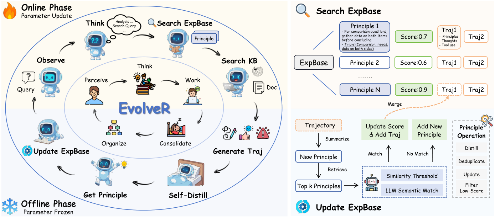
论文中的对照结果与适用范围
论文证据 · 同一经验 RL 训练设置0.382 vs 0.340
完整方法与评估时移除经验检索的对照（Qwen2.5-3B，原文 Table 3）。这里只支持该设置下检索复用的作用。
PPT 主线材料 · 页面所列原文核对 / 教学重构 · 来源
五、记忆与策略共同学习
17
Complementary RL：经验提取器与 Actor 共同演化
Actor 在变强，经验提取器也需要跟着改变；只持续向库里添加经验，还不等于共同学习。
Figure 2 · 原图
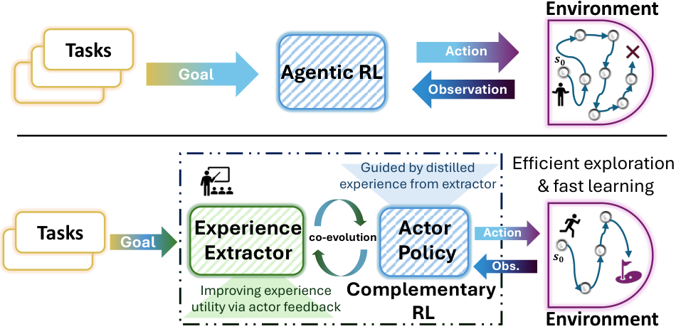
共同学习的对象是 Actor 与经验提取器；经验库更新、模型参数更新仍是不同操作。
18
EMPO²：概率混合三种采样与更新模式
同一个策略借助自己总结的 tips 探索，再学习在没有 tips 时也能行动。
Figure 5 · 原图
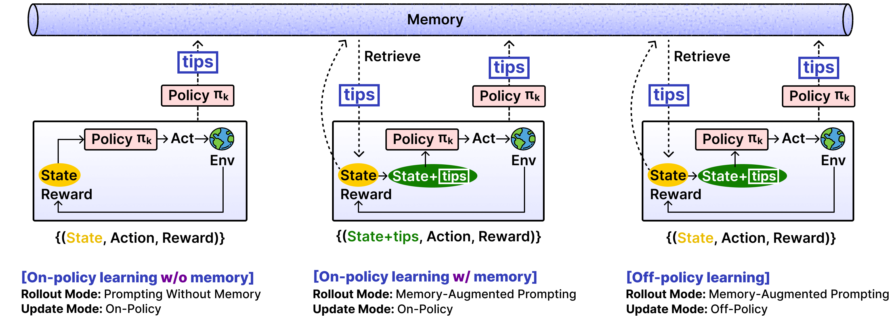
概率定义（按正文 §4.2）
Rollout：p 带 memory，1−p 不带 memory。带 memory 轨迹更新：q 去 tips，1−q 保留 tips。
原文算法与附录有符号口径差异，因此这里不标成一个统一默认百分比。
原图
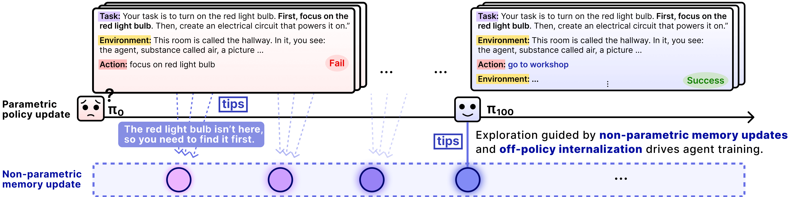
19
EDGE：按经验增益决定是否蒸馏
记忆是训练时的辅助，不应一直被依赖；先看它是否有帮助，再决定把什么学进策略。
20
方法对照：记忆库更新不等于策略学习
检索可以更主动，外部记忆可以被维护，参数策略也可以被训练；这三类变化不能混为一谈。
| 方法 | 反馈或控制 | 主要改变的对象 | 核心问题 |
|---|---|---|---|
| LightMem | 固定流程与离线更新 | 外部记忆库 | 何时整理 |
| MemR³ | 推理时 router 与 evidence-gap | 检索查询及当前证据状态 | 何时再查 |
| Memory-R1 | 下游任务反馈 | 记忆管理与使用策略 | 怎么管、怎么用 |
| EvolveR | 在线交互与离线原则整理 | 经验库与在线策略 | 经验如何循环 |
| Complementary RL | 后续 episode 结果 | Actor 与经验提取器 | 两者共同演化 |
| EMPO² | 奖励与概率混合训练模式 | 同一策略的有／无 tips 行为 | 如何兼顾辅助与独立行动 |
| EDGE | 带／不带经验的收益差 | 基础策略与动态经验库 | 何时值得蒸馏 |
EMPO² 按概率选择训练条件；EDGE 按经验增益门控蒸馏；Complementary RL 训练 Actor 与提取器。
再问三个问题：When / Where / How
- When · 什么时候变化
- 训练阶段、任务交互中，还是离线整理时？
- Where · 改变了哪里
- 当前上下文、外部记忆、适配参数，还是模型内部状态？
- How · 怎样改变
- 规则、检索、模型生成、递推更新，或奖励驱动的学习？
2026 · CCF ChinaSoft · 持续学习、Memory 与自进化 Agent · 讲座视角
讲座原框架：When / Where / How
原图
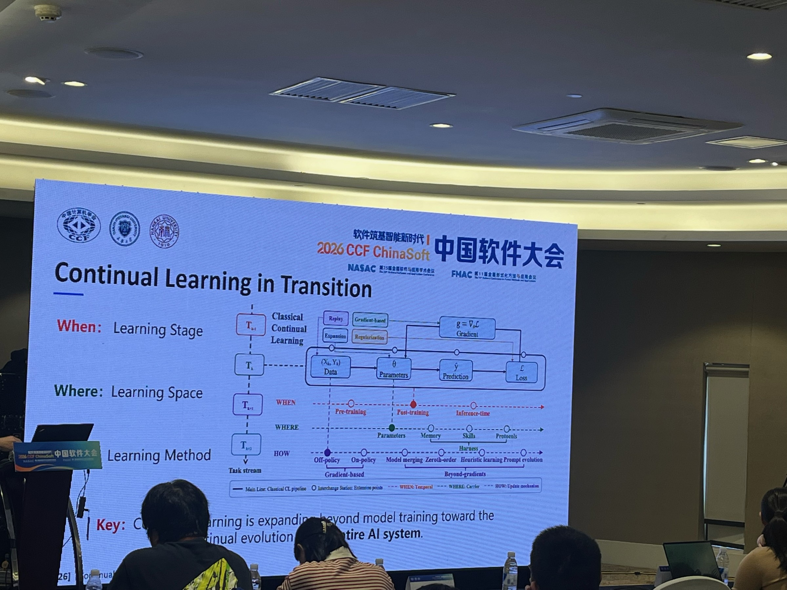
六、总结与拓展
21
总结：从具体方法回到记忆系统的设计空间
前面的分析围绕三个问题展开：如何取回有用信息、如何维护记忆、如何学习管理与使用策略。现在用综述重新定位这些机制，再扩展到不同载体与应用。
Figure 2 · 原图
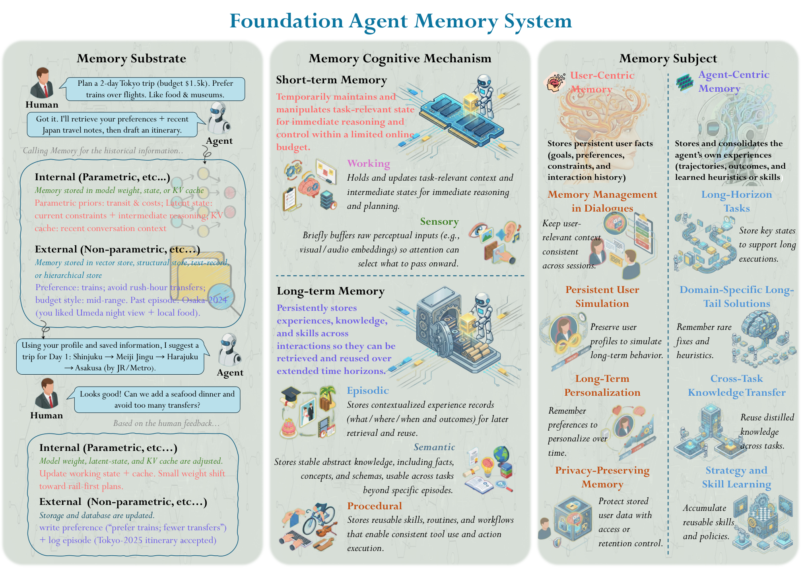

读图顺序：Memory Substrate → Cognitive Mechanism → Memory Subject。本报告的方法可以同时落在多个维度上，不是互斥的类别。
回顾各方法时，区分记忆存在哪里、承担什么功能、为谁服务。
讲者提示
读图顺序：Memory Substrate → Cognitive Mechanism → Memory Subject。后面的方法可以同时落在多个维度上，不是互斥的类别。
22
Agent Memory：形式、功能与动态过程
第二篇综述提供另一组互补视角：用什么承载记忆、为什么需要记忆，以及记忆如何形成和演化。
Figure 1 · 原图
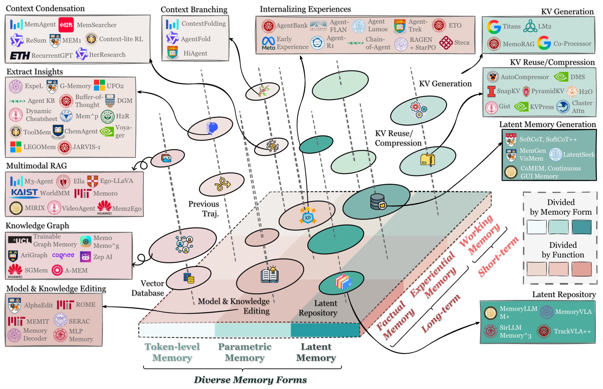

读图只抓 Forms / Functions / Dynamics 三条主轴，不逐一展开图中所有论文。它与前一篇分类互补，不强行建立一一对应关系。
比较方法时，同时看记忆载体、使用目的与生命周期，避免只按系统名称罗列。
讲者提示
读图只抓 Forms / Functions / Dynamics 三条主轴，不逐一展开图中所有论文。它与前一篇分类互补，不强行建立一一对应关系。
23
记忆操作：从存储、检索到更新与遗忘
同一份记忆需要持续维护；检索只是整个运行机制中的一个环节。
Figure 6 · 原图
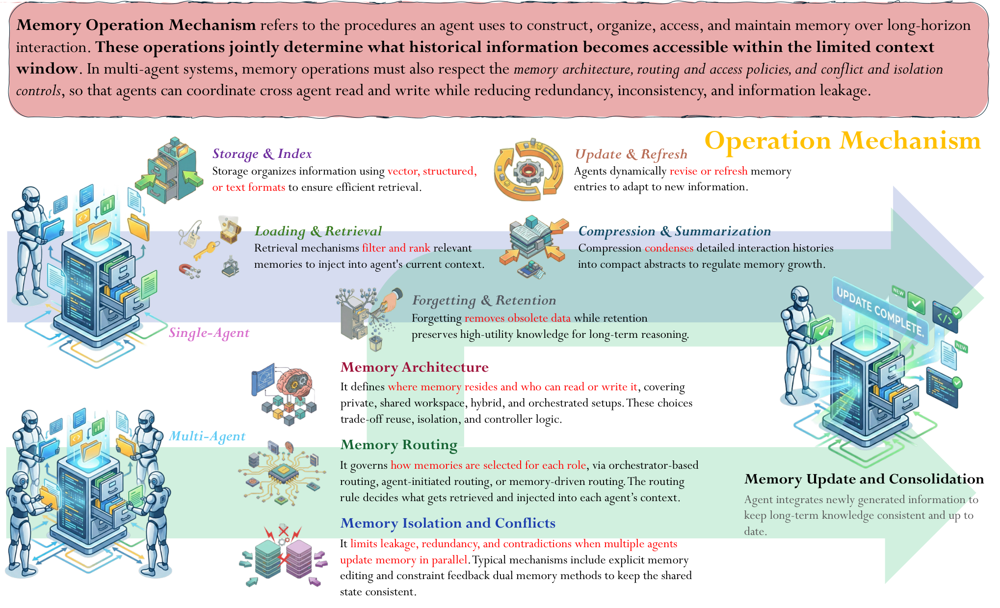

重点看单 Agent 的五类操作：存储与索引、加载与检索、更新与刷新、压缩与总结、遗忘与保留。多 Agent 部分只作背景，不展开新的支线。
前面的检索、增删改与组织巩固，分别对应记忆生命周期中的不同操作。
讲者提示
重点看单 Agent 的五类操作：存储与索引、加载与检索、更新与刷新、压缩与总结、遗忘与保留。多 Agent 部分只作背景，不展开新的支线。
24
记忆策略：从提示控制到可学习的管理
在确定记忆操作之后，进一步问：由什么机制决定何时、如何执行这些操作？
Figure 7 · 原图
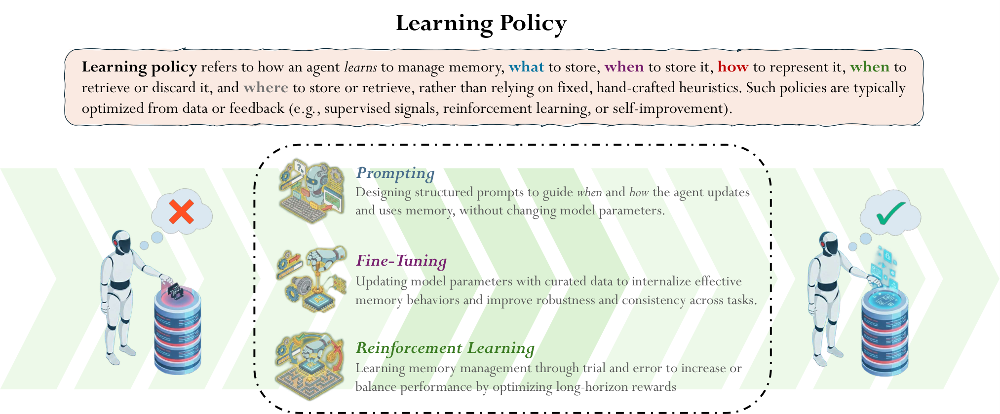

沿原图比较 Prompting、Fine-Tuning 与 Reinforcement Learning。关注决策依据和训练信号，不在这里展开优化公式。
“记住了什么”与“学会如何管理记忆”是两个需要区分的问题。
讲者提示
沿原图比较 Prompting、Fine-Tuning 与 Reinforcement Learning。关注决策依据和训练信号，不在这里展开优化公式。
25
记忆的载体与组织结构
Memory 可以采用不同载体，也可以采用不同组织结构。设计空间不止“保存一段摘要”或“放进一个向量库”。
形式 · 用什么承载：按这篇综述的划分，Token-level 以显式记录承载信息，Parametric 将信息编码进模型参数，Latent 以潜在向量或状态表示信息。
原图
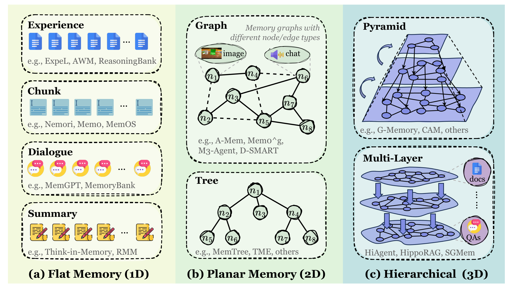
- Flat · 1D
- 片段、对话、摘要或经验条目；条目之间不显式建立拓扑关系。
- Planar · 2D
- 用图或树连接记忆单元，表达条目之间的关系。
- Hierarchical · 3D
- 用多层结构连接不同粒度的信息，支持从细节到抽象的访问。
载体决定信息以什么形式保留，组织结构决定信息之间如何连接。下一章分别看视觉历史、LoRA 适配与模型内部状态。
七、不同载体与应用展望
26
OCR-Memory：视觉历史与原文回取
OCR-Memory 改变历史的表示与访问方式：先用视觉形式保存，再定位需要的片段并取回原文。
原图
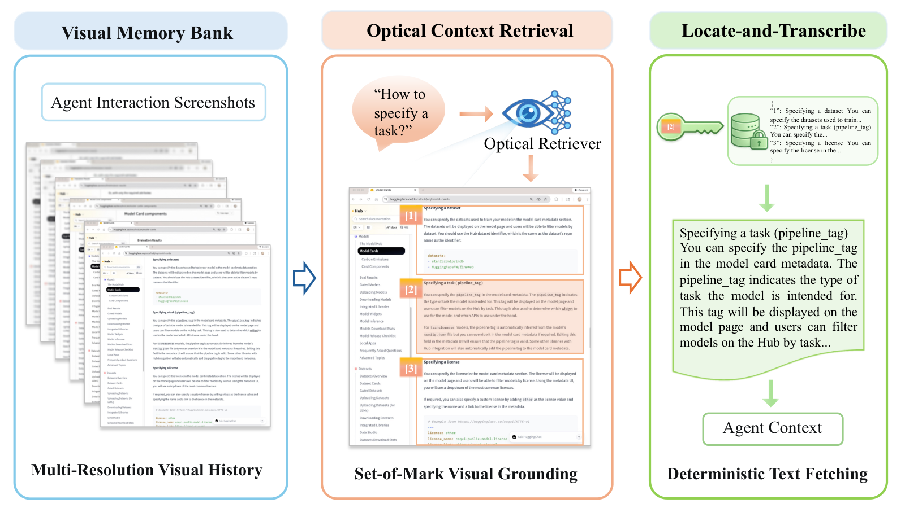
- 保存历史
- 将交互历史组织为多分辨率图像，并加入视觉锚点。
- 定位片段
- 根据当前问题，在视觉历史中预测相关片段的标识。
- 回取原文
- 用标识确定性地读取对应文本，再放回 Agent 上下文。
将历史表示、片段定位与原文回取分开：视觉形式用于定位，对应文本用于后续任务。
27
RPMem：跨会话记忆与 LoRA 适配
除了把记录取回上下文，历史还可以通过适配参数参与回答：RPMem 尝试把累积的会话记忆映射成 LoRA。
原图

- 编译一次会话
- Session Encoder 将本次历史编码为固定形状的潜在记忆。
- 整合多次会话
- Recurrent Consolidation Gate 结合新记忆与保留状态，学习跨会话的信息取舍。
- 生成 LoRA
- LoRA Decoder 将整合后的状态映射为特定主模型的适配参数，用于后续回答。
按原图讲：(a) 学会把单次会话编译为可用记忆；(b) 学会跨会话巩固；(c) 推理时递推更新记忆，再解码为 LoRA。推理阶段学习模块冻结，适配参数由前向计算生成，并非每轮重新做梯度微调。
这里连接了两种表示：记忆先保存在潜在状态中，再变成影响模型计算的 LoRA。换主模型时，需要适配它的 decoder。
28
MemT-1.0：模型内生记忆
另一条路线不再把记忆解码为 LoRA，而是在 Transformer 中加入原生记忆模块，让持续更新的内部状态参与生成。
原图
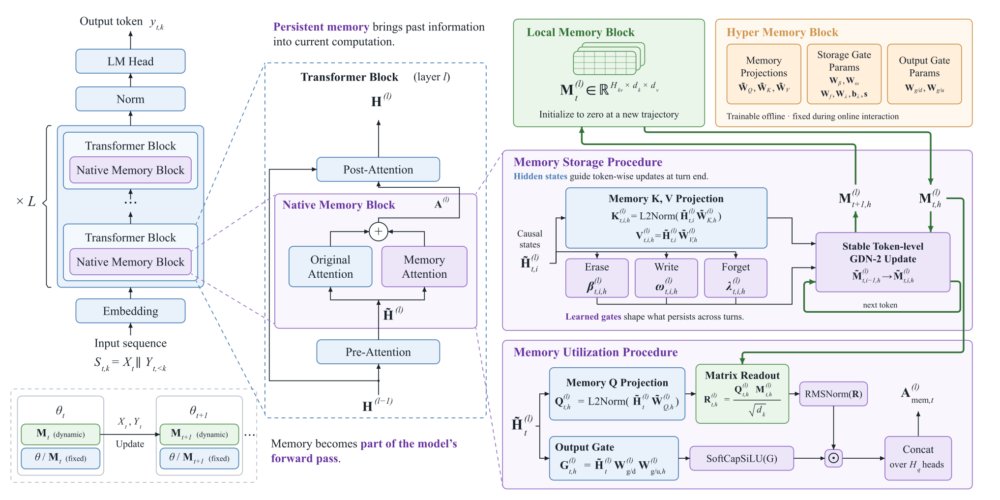
- 记忆放在哪里
- 选定的 Transformer 层加入 Native Memory Block；原注意力与记忆注意力共同产生输出。
- 如何写入
- 轮次结束时，用隐藏状态逐 token 更新 Local Memory；学习到的门控制写入、擦除和遗忘。
- 如何使用
- 生成时查询累积的 Local Memory；Hyper Memory 提供离线训练、在线固定的投影与门参数。
与 RPMem 的区别：RPMem 将跨会话状态解码成 LoRA；MemT-1.0 直接读取原生记忆状态。后者不应统称为 LoRA memory。在线变化的是 Local Memory 状态，新轨迹会将其初始化为零。
从检索外部记录，到生成适配参数，再到维护模型内部状态：Memory 的载体与访问位置都可以成为设计选择。Personal Agent 还需要考虑这些记忆能否被查看、纠正与删除。
29
Personal Agent：长期协作中的记忆管理
回到开场的应用需求：Agent 不仅延续一次长任务，还要在跨任务、跨会话的变化中保持有用和可控。
一个持续变化的个人任务
用户说：“下个月去上海开会，尽量坐高铁。”
后来更新：“会议改到杭州；周四上午需要留给组会。”
之后提问：“帮我安排这次出行。”
- Query
- 找到本次会议、当前有效地点、出行偏好与时间约束。
- 增删改
- 识别“杭州”是在修改同一会议；临时约束不过度概括为永久偏好。
- 组织与载体
- 活跃任务进入当前上下文；长期记录保留来源和时间，必要时回查原始材料。
用户可查看用户可纠正用户可删除敏感操作需授权
长期个人助手的关键不是“永远不忘”，而是该记的能用、变了的能改、不该留的可删。
参考资料
30
主要来源
原论文 overview 与方法章节作为讲解锚点；不展开 Obsidian 文档、产品工程或代码迁移支线。
2026 · ICLR · Evaluating Memory in LLM Agents via Incremental Multi-Turn Interactions
2025 · ICML · From RAG to Memory: Non-Parametric Continual Learning for Large Language Models · v2
2026 · ICLR · Evoking User Memory: Personalizing LLM via Recollection-Familiarity Adaptive Retrieval
2026 · ICML · EvolveR: Self-Evolving LLM Agents through an Experience-Driven Lifecycle · v3
2026 · ICLR · LightMem: Lightweight and Efficient Memory-Augmented Generation · v4
2026 · ICLR · Exploratory Memory-Augmented LLM Agent via Hybrid On- and Off-Policy Optimization · v2
2025 · arXiv 预印本（录用／在投未公开核实） · Memory in the Age of AI Agents · v2
逐页来源与证据范围 · 原图 URL 与哈希 · 新增方法的图—步骤核对 · 2026-11-05 录用／在投状态复查
发表状态：MemR³ 的改题会议版已由 NeurIPS 2026 官方 Poster 记录确认；当前图解使用旧题预印本 v1。Complementary RL 与 Memory in the Age of AI Agents 暂未核实公开的录用或在投声明。后者的 OpenReview Archive / CoRR 记录不等于会议投稿或录用；未查到公开声明也不代表作者没有投稿。
应用场景与记忆载体
2025 · arXiv 预印本（录用／在投未公开核实） · Memory in the Age of AI Agents · Figure 3 / §3：记忆形式与结构 · v2
参数化与内生记忆拓展
2026 · arXiv 预印本（录用／在投未公开核实） · MemT-1.0: Towards Memory-Native Evolution · Figure 4 / §2 · 原生记忆 · v2
RPMem 与 MemT-1.0：2026-11-05 核查 arXiv 页面、作者官方仓库及精确题名检索，未核实公开的录用或在投声明，暂标预印本；不据此断言没有投稿。
讲座引入与原图追溯
2026 · CCF ChinaSoft · 具身记忆现场整理
2026 · CCF ChinaSoft · Harness 工程现场整理
2026 · CCF ChinaSoft · 持续学习与 Agent Memory
2021 · Frontiers in Psychology · Method of Loci · Figure 1
讲座配图原图查找结果、来源与范围 · 照片、转写与论文证据分开标注；自动转写未逐句人工听校。